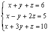
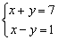
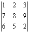
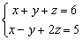

聯立二/三元一次方程(習慣通解)及行列式
程式參考了網友roviury意見進行修改。
更新日期: 2012年4月3日
這個版本程式通解由預設 x=t改為z=t，較接近習慣用法。
● 新版程式較舊版短一些，第二個程式(多2 bytes)可保留M記憶作儲存臨時數據之用,。
● 可計三階行列式
● 可計聯立二元一次方程及其方程組行列式
● 可計聯立三元一次方程及其方程組行列式
● 若聯立三元一次方程有無限解，可以顯示方程組的通解
● 可以直接從兩條聯立三元一次方程找出其通解，因此可以作為解方程的步驟
● 分數版，輸入係數為整數，答案會以分數形式表示，建建議將計數機預先設定為假分數形式表示(按 SHIFT SETUP → → 2 )。
程式需要在 REG Lin 模式下執行，因此在選擇新程式位置後，按 5 1 選用REG Lin模式。
注意 : 若果不用記存答案，程式中綠色部份可以不輸入 ，第一個程式長度變為170 bytes，第二個程式則為172 byes。藍色的英文字為統計模式中的變數(n 按 shift 1 3 ，x為平均x 按 shift 2 1 1，y為平均y 按 shift 2 1 → 1)，FreqOn 按 Shift MODE ← ← 1。
第一個程式 (169 bytes 或 173 bytes)
FreqOn: ?→D: ?→C: ?→B: ?→A: ?→X: ?→Y: ?→M:
CM - YB , BX - MD ; DY - XC DT: ?→B:
AY - BC→Y: DB - XA→X: Lbl 0: Y┘n→D:
X┘n→C: x┘n→B: y┘n→A: ?→D: ?→C: ?→B: ?→A:
An - DY - CX→A: Dx + Cy + Bn→D◢ A2 = - D2 => Goto 0:
A┘D→C: (Y + xC)┘n→A◢ (X + yC)┘n→B◢ C
第二個程式 (171 bytes 或 175 bytes，使用記憶A, B, C, D, X及Y)
FreqOn: ?→D: ?→C: ?→B: ?→A: ?→X: ?→Y: B: ?→B:
CB - YAns , AnsX - BD ; DY - XC DT: ?→B:
AY - BC→Y: DB - XA→X: Lbl 0: Y┘n→D:
X┘n→C: x┘n→B: y┘n→A: ?→D: ?→C: ?→B: ?→A:
An - DY - CX→A: Dx + Cy + Bn→D◢ A2 = - D2 => Goto 0:
A┘D→C: (Y + xC)┘n→A◢ (X + yC)┘n→B◢ C
例題1: 解聯立方程 :

按 Prog 1 再按 1 EXE 1 EXE 1 EXE 6 EXE 1 EXE -1 EXE 2 EXE 5 EXE 1 EXE 3 EXE 1 EXE 10 EXE
(顯示方程組行列式為 -2) EXE (顯示x=1) EXE (顯示y=2) EXE (顯示z=3)
程式若有綠色程式碼，執行完成後，按 RCL A 、RCL B、RCL C及RCL D分別顯示x、y、z的值及方程組行列式的值。
例題2: 解以下聯立二元一次方程

按 Prog 1 再按
1 EXE 1 EXE EXE (不輸入 z的係數) 7 EXE
1 EXE -1 EXE EXE (不輸入 z的係數)1 EXE (顯示4) EXE (顯示3)
因此解答為 x = 4 及 y = 3.
程式執行完成後，請按AC中止程式
x的值、y的值及方程組行列式的值分別儲存於記憶D、C及n中。
例題3: 計算下列的行列式:

按 Prog 1 再按 1 EXE 2 EXE 3 EXE EXE (不輸入數值)
7 EXE 8 EXE 9 EXE EXE (不輸入數值)
6 EXE 5 EXE 2 EXE EXE (不輸入數值，最後顯示行列式的值為12)
程式若有綠色程式碼，執行完成後，請按AC中止程式。行列式的值儲存於記憶D。
例題4: 解聯立方程 :
按 Prog 1 再按 1 EXE 1 EXE 1 EXE 6 EXE 1 EXE -1 EXE 2 EXE 5 EXE 3 EXE
1 EXE 4 EXE 17 EXE (顯示行列式為0) EXE
(注意此時沒有Disp，並且有?D號，表示有無限解，顯示x的解，常數項為11/2)
EXE (顯示y的解，常數項為1/2)
EXE (顯示x的解，t的係數為 -3/2)
EXE (顯示y的解，t的係數為 1/2)
因此通解為:
x = 11/2 - 3t/2
y = 1/2 + t/2
z = t
程式執行完成後，請按AC中止程式。 x,y的常數項及x,y的係數分別儲存在記憶D, C, B, A中。
例題5: 求下列聯立方程的通解:

按 Prog 1 再按 1 EXE 1 EXE 1 EXE 6 EXE 1 EXE -1 EXE 2 EXE 5 EXE
(注意此時有?D號，顯示y的解，常數項為11/2)
EXE (顯示y的解，常數項為1/2)
EXE (顯示x的解，t的係數為 -3/2)
EXE (顯示y的解，t的係數為 1/2)
因此通解為:
x = 11/2 - 3t/2
y = 1/2 + t/2
z = t
程式執行完成後，請按AC中止程式。 x,y的常數項及x,y的係數分別儲存在記憶D, C, B, A中。
註: 若方程組為 a1x + b1y + c1z = d1 , a2x + b2y + c2z = d2 , a3x + b3y + c3z = d3
程式的限制條件為: a1b2≠b1a2
注意: 若如果程式在輸入第二條方程後出現錯誤 Math ERROR，代表違反限制條件為: b1c2≠b2c1， 若果是計算聯立三元一次問題，請改為先輸入第三組方程即可。如果程式在輸入第三條方程後出現錯誤 Math ERROR，代表方程組方程無解。
返回 CASIO fx-3650P II及fx-50FH II程式集

附錄較簡短的小數版程式
程式需要在 REG Lin 模式下執行，因此在選擇新程式位置後，按 5 1 選用REG Lin模式。
注意: 藍色的英文字為統計模式中的變數(Σx 按 Shift 1 2，Σy 按 Shift 1 → 2，Σxy 按 Shift 1 → 3)。
第一個程式小數版 (162 bytes 或 166 bytes)
FreqOn: ?→D: ?→C: ?→B: ?→A: ?→X: ?→Y: ?→M:
CM - YB , BX - MD ; 1 ÷ (DY - XC DT: ?→B:
AY - BC→Y: DB - XA→X: Lbl 0: Yn→D:
Xn→C: Σx→B: Σy→A: ?→D: ?→C: ?→B: ?→A:
A÷n - DY - CX→A: Dx + Cy + B÷n→D◢ A2 = - D2 => Goto 0:
A┘D→C: nY + ΣxC→A◢ nX + ΣyC→B◢ C
第二個程式小數版 (164 bytes 或 168 bytes，使用記憶A, B, C, D, X及Y)
FreqOn: ?→D: ?→C: ?→B: ?→A: ?→X: ?→Y: B: ?→B:
CB - YAns , AnsX - BD ; 1 ÷ (DY - XC DT: ?→B:
AY - BC→Y: DB - XA→X: Lbl 0: Yn→D:
Xn→C: Σx→B: Σy→A: ?→D: ?→C: ?→B: ?→A:
A÷n - DY - CX→A: Dx + Cy + B÷n→D◢ A2 = - D2 => Goto 0:
A┘D→C: nY + ΣxC→A◢ nX + ΣyC→B◢ C